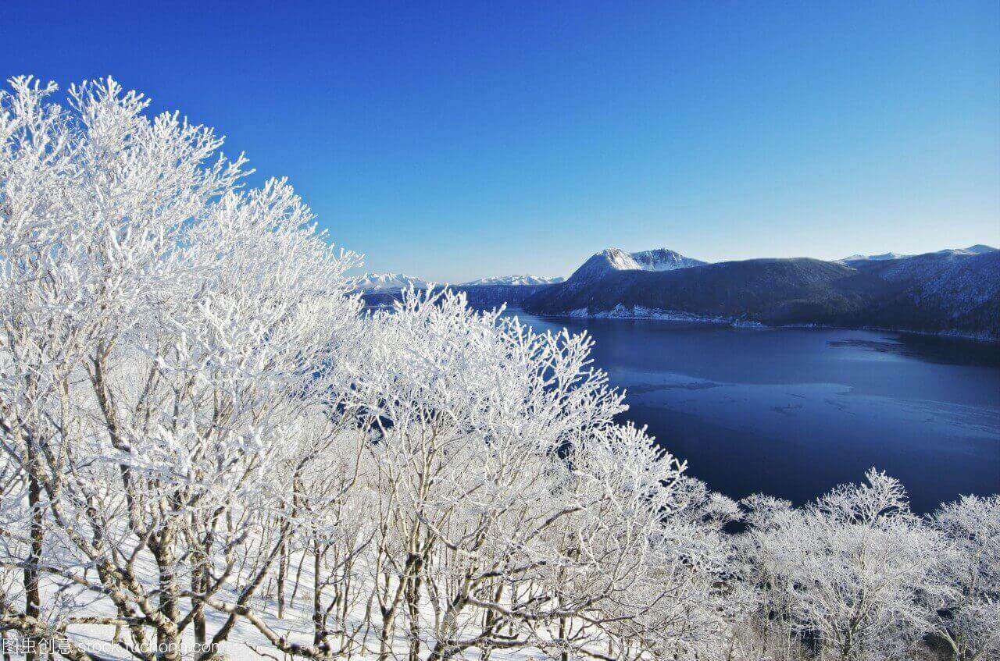
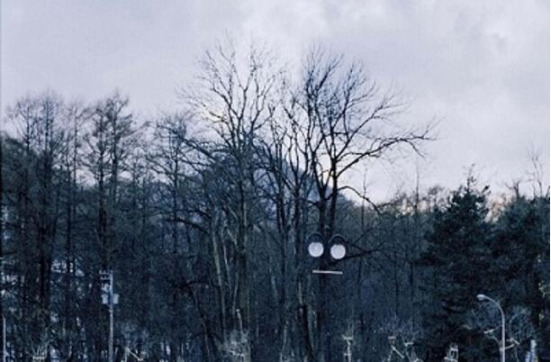
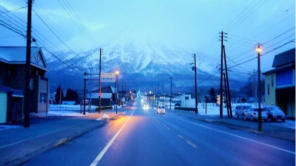
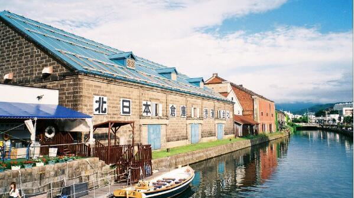

morly旅游圈
北海道（Hokkaido），是日本47个都道府县中唯一的道，也是最北的一级行政区，为日本除了本州以外最大的岛，也是世界面积第21大岛屿，略小于爱尔兰岛。南以津轻海峡界本州岛，北以宗谷海峡界库页岛。札幌是北海道的行政中心以及最大城市。 2018年10月26日11时04分，在日本北海道地区(北纬44.45度，东经145.55度)发生5.4级地震，震源深度10千米。 北海道以其迷人的雪景闻名于世，冬天是游览北海道的较佳季节。一年一度的北海道雪祭盛会于每年2月上旬展开，会场分别设于大通公园及真驹内自卫队广场两处，游客可在此参观。这时，各国高手云集，尽显身手，雕砌的冰雕艺术杰作，雄伟壮观，独具匠心。
生命只是一连串孤立的片刻，靠着回忆和幻想，许多意义浮现了，然后消失，消失之后又浮现。日本，与冷漠相反的友好，较礼貌更甚的体贴。总听人说，日本是一个去了又去的地方，我觉得是。 日本是一个旅游体验非常棒的国家，细致贴心、热情有礼的服务以及完善到接近变态的措施，都让人觉得可敬又可怕。或许大的国情我们小老百姓真的不能决定亦不能改变，但就从一些我们完全可以自控的行为来看，国人与日本人之间也存在着太大的差距。 北海道的魔力：对，是魔力，不仅仅是魅力。每一个季节都拥有不可复制的美，春的蓬勃，夏的繁花，秋的诗意，冬的圣洁。我迷恋于它，被疯狂地吸引住，这片像是有魔法存在的土地，并非让人觉得惊艳，但一定会赞叹。 每次出远门感觉好像都是在清晨太阳还没升起之前，拖着沉重的眼皮、沉重的箱子和一头乱发跟猪流早早来到了机场。此时天慢慢亮了起来，我们的倦意也慢慢消失——又要开始未知的旅途，去到一个被大雪覆盖的地方。一直觉得，没有下雪的冬天是不完美的，所以即便很多人说冬天不是应该远离寒冷去海边晒太阳吗，我依然初衷不改，想要让自己的这个冬天变得完美起来。
北海道位于日本北部，面积占全日本的五分之一 ，而人口只有东京的一半，人口密度极低，而且多集中于以札幌为中心的小樽与旭川之间，故此游客到了北海道，往往会有广大安逸的感觉，与日本其它城市的拥挤繁荣相比，实在是别树一帜。北海道是以其迷人的雪景闻名于世，故冬天是游览北海道的最佳季节。一年一度之北海道雪祭盛会约于每年2月上旬展开，会场分别设于大通公园及真驹内自卫队广场两处，游客可在此参观各国高手云集，尽展身手而雕砌成之冰雕艺术杰作，雄伟壮观，匠心独运。
此外，北海道亦有很多值得游览之地。登别温泉为北海道最大之温泉，四周群山环抱，在狭窄的峡谷里涌出11种温泉，水温由45℃至93℃不等，可治疗多种疾病，亦可在此游览著名之地狱谷、药师如来像、火山口褚色的绝崖及琉璜喷泉口等奇景。支笏湖为北海道第一大湖，湖畔耸立着之樽前山及惠前岳，均为活火山，曾于1978年爆发，仍有喷烟，与波平浪静的湖面相映成趣。附近之四方岭上有一熊牧场，饲养了珍贵棕熊二百多只，并可作精彩的表演，游客可在园内自由饲喂并拍照留念。 北海道道内有九处地方举行雪祭。北海道东部，有知床(Shiretoko)雪祭、网走(Abashiri)的网走浮冰游览船之旅、网走．鄂霍次克浮冰祭。北海道中部，有札幌(Sapporo)雪祭、层云峡(Sounkyo)冰瀑祭、旭川(Asahikawa)冬祭衣亚寒湖(Lake Akan)冰祭。北海道南部也有两处，是带广冰祭和钏路冰祭。最大规模和历史悠久的应首推札幌雪祭。各地雪祭举行的时间长短不一，有的仅为数天，如藏王冰树祭只有两天，亚寒湖冰祭亦为四天而已。网走浮冰游览船之旅却长达三个月，由每年的一月十五日至四月十五日，至于雪祭的佼佼者－－札幌雪祭则为期一周，每年由二月第二个星期日前三天开始。第一次雪祭始于一九五零年，当年在大通公园举行的雪祭仅得六队中学生参加。一九五五年，自卫队的加入令雪祭开始受人注目，发展成为札幌最盛大的节日。据说，对日本人来说，有两件事是一定要做一次的，就是攀登富士山和参加札幌雪祭。可见日本人对雪祭的喜爱。
旅游攻略提醒：
1.一般车站或者宾馆甚至有些餐厅都会有一些关于在 北海道旅行的小册子或者宣传单之类的，可以拿一些，里面除了会介绍各种好吃好玩的以外还可能会有一些coupon，多少能用上点。
2.有效利用团购网站，推荐一个groupon，当时我们就是在上面团到了札幌的住宿，才1900日元/人/晚，原价要3500日元。
3.中午吃饭肯定比晚上便宜，想吃大餐尽量在中午搞定，还能减肥。
4. 北海道 冬天天黑的很早，一般下午4点日落、4点半左右天黑；
5.所有商场关门都较早，一般8点-9点就关门了（BIC CAMERA算关门很晚的商场了 ）；
6.行程不宜太紧凑，冬天不管是雪地上走路而或乘坐交通工具，都可能因为不可抗拒的天气因素，使得实际花费时间远超过计划时间；
7.不要天真的预估游玩时间，只有当你到了，你才知道在动物园看企鹅和狼也可以各看半个小时以上，你才知道在占地小小的熊牧场也可以玩上3个小时……
内容整理至网络，如有侵权，请联系我们！1255394075@qq.com
   